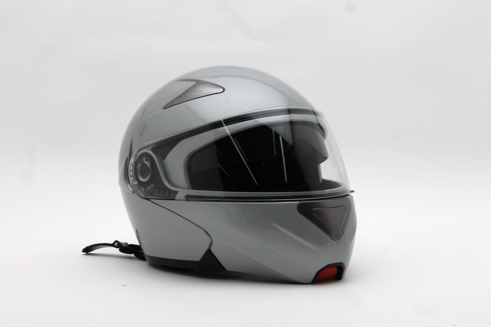
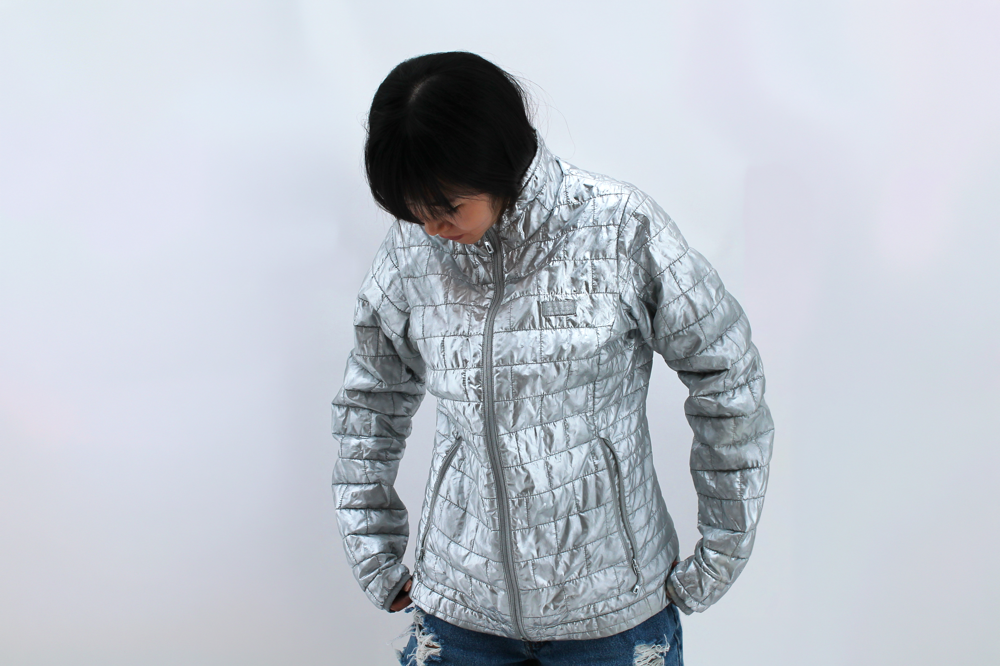
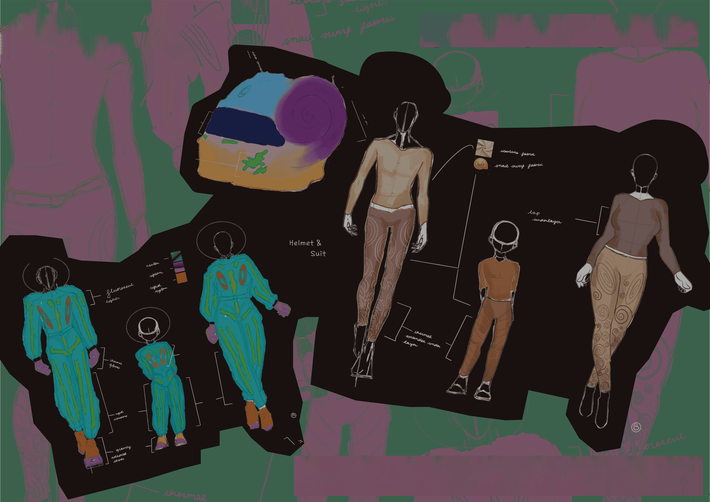

Colony Dome 4 • 2126 Edition ©
Enough for 3 dry cleans and one new helmet polish.
Fashion on Mars isn’t just about survival, it's about trends, boldness, and eccentric displays of personal style!
Every Martian wears the same core suit architecture — inspired by the spiral geometry of ancient Earth snails. Turns out shells are a perfect design for our dusty environment, providing both protection and flexibility.

Protect your head with elegance! check out our latest design that deflects radiation. Made 100% from crushed pearls harvested from our aquafarms.

Outer EVA suits built with ribbed plating modeled after fish scales — flexible, durable, and perfectly comfortable.

Inside the dome, Martians wear soft spiral-woven fabrics that retain warmth and echo the shell motif of our culture.
Please remeber to rinse your shell plates after a dust storm. Martian sand has a habit of working its way into the seams.
And remember: if your suit starts whistling, that’s not random — it’s a pressure leak.
The air may be dusty, but with the right suit, you can own the Martian landscape while remaining loyal to the shell.